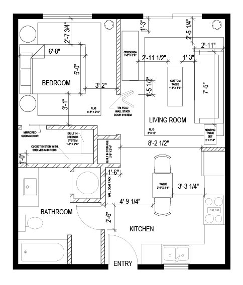
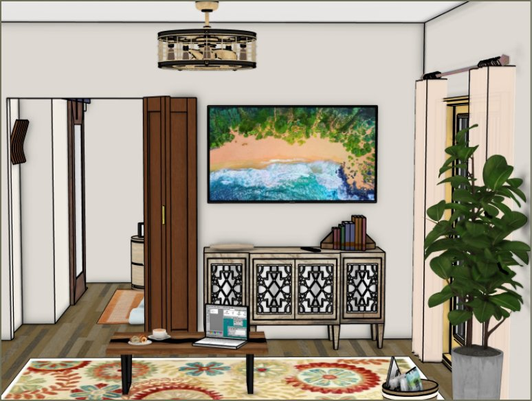
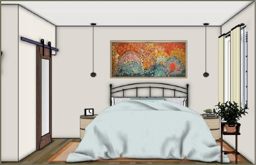
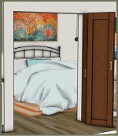
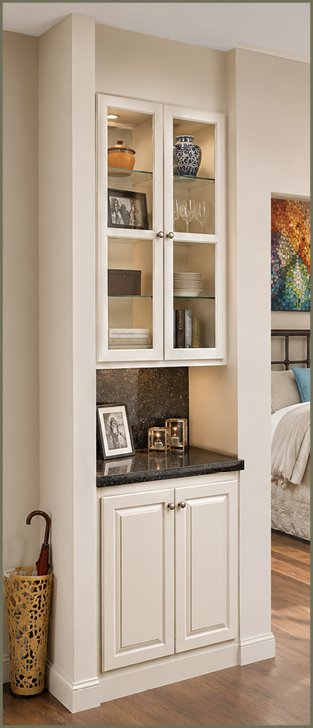
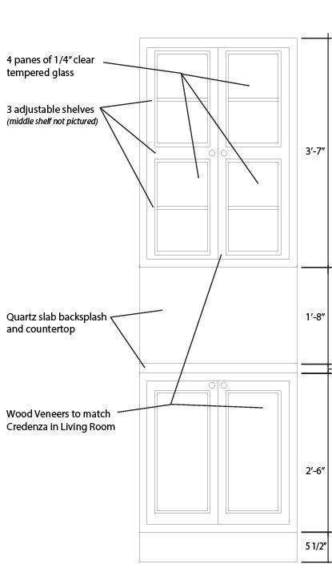

ID: Project / Space Plan
Caribbean
Minimalism
This home remodel was tailored for a client from Puerto Rico and frequent travel is integrated into the design. Caribbean color, Spanish Colonial details, natural materials, and a minimalist influence create a personal retreat without becoming overly themed.
Design language
Warm woods, wrought-iron details, textured fabrics, island-inspired colors, and natural elements establish the design language, while meaningful client-provided pieces connect the spaces to the client’s heritage.
Broken tiles brought from Puerto Rico were repurposed into custom artwork, while the client’s photography was incorporated into a gallery wall. Overall, design balances relaxation and function while creating a home that reconnects the client to their Puerto Rico roots.


Opening the plan
Moving walls, opening the floor plan and built-ins improves circulation, storage, and functionality within the home’s existing footprint. Reconfiguring the primary bedroom to include a larger walk-in closet with a sliding mirror door provides the small room more space.
A larger doorway between the bedroom and living room showcases a bespoke tri-fold antique door and allows for a larger connection between the bedroom and living room, while still creating privacy when needed.



Built-in & palette
In the main living area, a former large hall closet was reconfigured into a smaller closet and a built-in storage area. The color palette for the residence was inspired from a custom art piece made of broken tiles from Puerto Rico.
Overall, materials and furnishings are a blend of vibrant Caribbean and Spanish Colonial influences but with a minimalist foundation.

